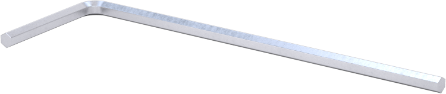
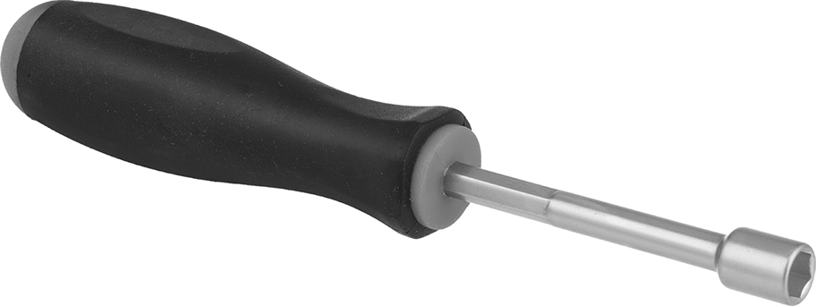
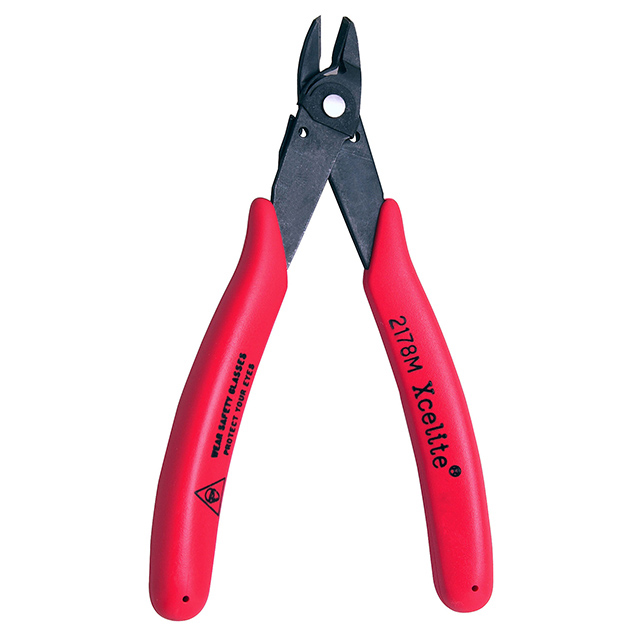
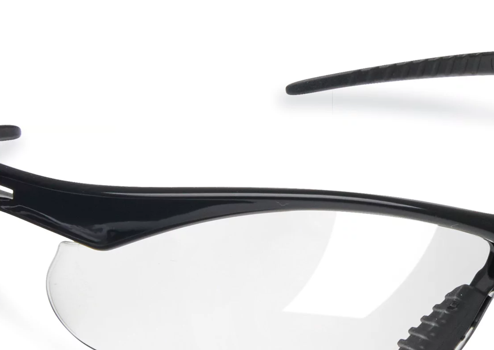
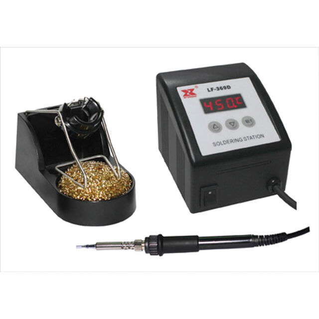
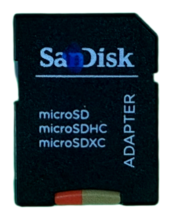

HAMR II Builder Tools Inventory
Use this page to identify the issued tools and bench-support items used during the published HAMR II build tasks. Every image can be clicked to enlarge for easier tool identification at the bench.
Distinct Tool Types
12
Hand tools, safety items, and bench-support items on this page.
Issued Quantity
14
Total quantity listed, counting duplicate Allen keys.
| Picture | Item | Short Description | Per System |
|---|---|---|---|
|
 assets/img/allen15.png
|
M1.5 Allen key
|
Used with M2 socket-head screws, especially on the camera mount. | 1 |

assets/img/allen20.png
|
M2 Allen key
|
Used on the lower-frame screws and other M3 frame hardware that takes the 2.0 mm driver. | 2 |

assets/img/allen25.png
|
M2.5 Allen key
|
Used with M3 socket-head screws such as the GPS mounting hardware. | 2 |

assets/img/driver55.png
|
M5.5 nut driver
|
Used on M3 nylon-insert lock nuts in the GPS and camera task. | 1 |
|
 assets/img/m8driver.png
|
M8 nut driver
|
Larger hex nut driver kept with the issued tool set. | 1 |

assets/img/pliers.jpg
|
Pliers
|
General-purpose pliers for holding small hardware and removing pushed-out print debris. | 1 |
|
 assets/img/shear-cutter.jpg
|
Snips
|
Side cutters for trimming wire, zip ties, or other light cut tasks when directed. | 1 |
|
 assets/img/eyepro.png
|
Eye protection
|
Required before soldering or any task that can shed debris. | 1 |
|
 assets/img/soldering-station.jpg
|
Soldering station
|
Bench soldering setup used to install the Raspberry Pi header and SIP switch. | 1 |

assets/img/solder.webp
|
Roll of solder
|
Consumable solder wire for making the Raspberry Pi through-hole joints. | 1 |
|
 assets/img/micro_sd_adapter.png
|
microSD card
|
Classroom-issued storage card used when directed during the Raspberry Pi workflow. | 1 |

assets/img/3rd-hand.jpg
|
Helping hand
|
Light holding fixture for stabilizing small parts during bench work. | 1 |